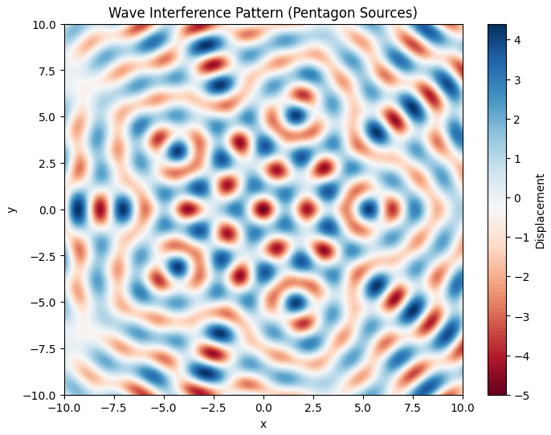
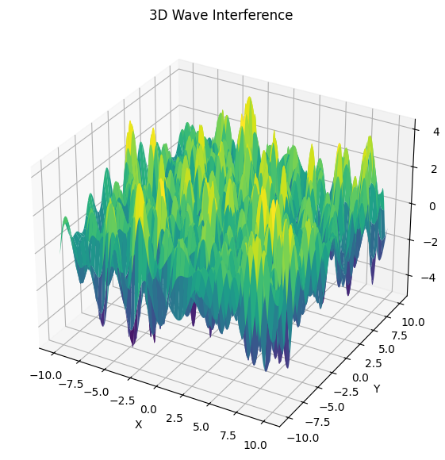
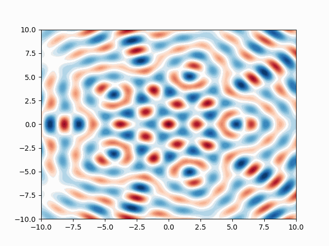

1️⃣
Problem 1: Interference Patterns on a Water Surface
1. Motivation
Interference occurs when waves from different sources overlap, creating new patterns. On a water surface, this can be observed when ripples from different points meet, forming distinctive interference patterns.
Studying these patterns helps us: - Understand constructive and destructive interference - Visualize coherent wave interactions - Relate wave phase, distance, and geometry
This task provides a hands-on simulation of superposed wave behaviors from multiple point sources arranged in polygonal formations.
2. Problem Statement
You will analyze the interference patterns formed on the water surface due to the superposition of waves emitted from point sources placed at the vertices of a regular polygon.
3. Steps
-
select a Regular Polygon
We'll use a regular pentagon (5 vertices) as the base case. -
Position the Sources
Each wave source is placed at a vertex of the pentagon. -
Wave Equation for a Single Source
The surface displacement from one point source is described by:
Where:
- \(A\): Amplitude
- \(k = \frac{2\pi}{\lambda}\): Wave number
- \(\omega = 2\pi f\): Angular frequency
- \(r_i = \sqrt{(x - x_i)^2 + (y - y_i)^2}\): Distance from the i-th source
- \(\phi\): Initial phase (0 for all sources)
- Superposition of Waves
The total displacement is the sum:
$$ z(x, y, t) = \sum_{i=1}^{N} z_i(x, y, t) $$ 
4. Interpretation
Constructive Interference: Where waves from sources arrive in-phase — peaks reinforce each other.
Destructive Interference: Where waves arrive out-of-phase — peaks cancel troughs.
By placing sources at polygon vertices, symmetrical interference patterns emerge, showing how spatial wave arrangements shape the resulting surface.

5. Python Simulation Code
import numpy as np
import matplotlib.pyplot as plt
from matplotlib import animation
# Parameters
A = 1 # Amplitude
wavelength = 2 # Wavelength
frequency = 1 # Frequency
omega = 2 * np.pi * frequency
k = 2 * np.pi / wavelength
phi = 0
# Grid
x = np.linspace(-10, 10, 400)
y = np.linspace(-10, 10, 400)
X, Y = np.meshgrid(x, y)
# Polygon: Regular Pentagon
N = 5
radius = 5
sources = [(radius * np.cos(2*np.pi*i/N), radius * np.sin(2*np.pi*i/N)) for i in range(N)]
# Superposition Function
def wave_sum(t):
Z = np.zeros_like(X)
for (x0, y0) in sources:
r = np.sqrt((X - x0)**2 + (Y - y0)**2) + 1e-6 # avoid div by 0
Z += A * np.cos(k * r - omega * t + phi)
return Z
# Heatmap at fixed time
t0 = 0
Z = wave_sum(t0)
plt.figure(figsize=(8, 6))
plt.contourf(X, Y, Z, levels=100, cmap='RdBu')
plt.colorbar(label='Displacement')
plt.title("Wave Interference Pattern (Pentagon Sources)")
plt.xlabel("x")
plt.ylabel("y")
plt.show()
# 3D Plot
from mpl_toolkits.mplot3d import Axes3D
fig = plt.figure(figsize=(10, 7))
ax = fig.add_subplot(111, projection='3d')
ax.plot_surface(X, Y, Z, cmap='viridis', edgecolor='none')
ax.set_title("3D Wave Interference")
ax.set_xlabel("X")
ax.set_ylabel("Y")
ax.set_zlabel("Amplitude")
plt.show()
# Animation (Optional GIF)
fig, ax = plt.subplots()
c = ax.contourf(X, Y, wave_sum(0), levels=100, cmap='RdBu')
def animate(i):
ax.clear()
Z = wave_sum(i * 0.1)
ax.contourf(X, Y, Z, levels=100, cmap='RdBu')
ani = animation.FuncAnimation(fig, animate, frames=40, interval=100)
ani.save('wave_interference.gif', writer='pillow')

6. Deliverables
- Code simulating interference from polygon-placed wave sources
- Heatmap and 3D plots illustrating constructive/destructive regions
- Animated GIF showing wave evolution over time
- Explanations of observed interference behaviors
7. Conclusion
This simulation gives a visual and interactive insight into how waves from multiple sources interact through superposition. It emphasizes the importance of geometry in creating symmetrical or complex wave patterns and helps in understanding real-world wave phenomena such as sound interference, water ripples, and even quantum wavefunctions.